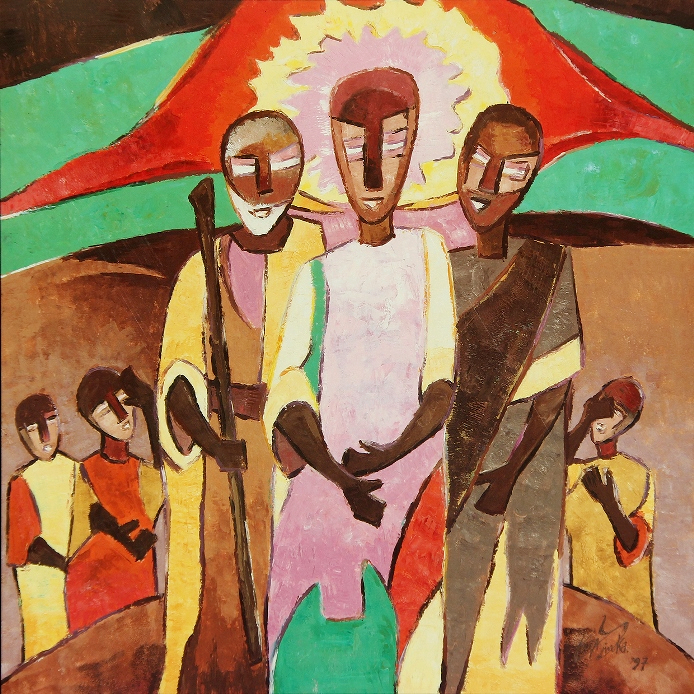
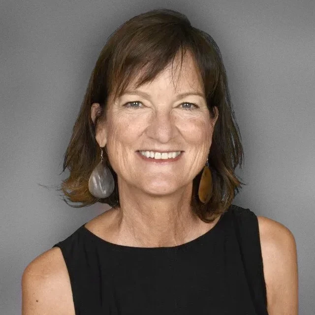
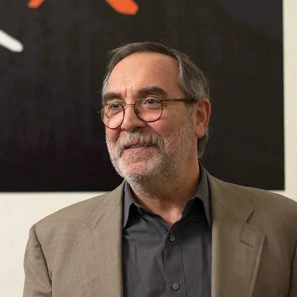
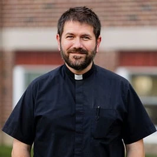
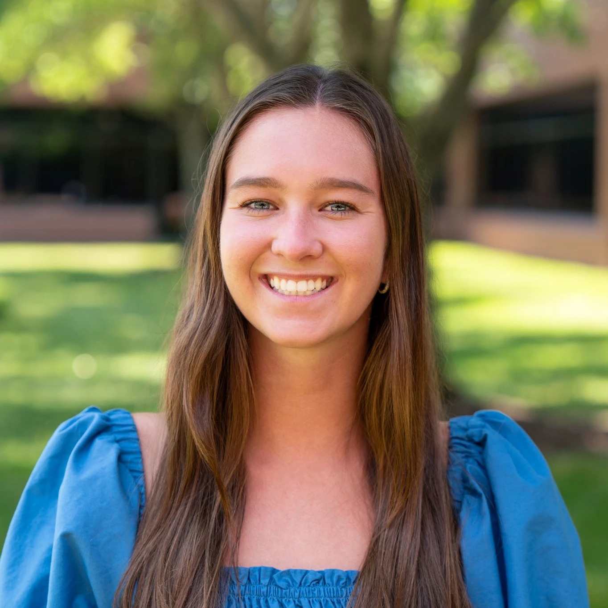
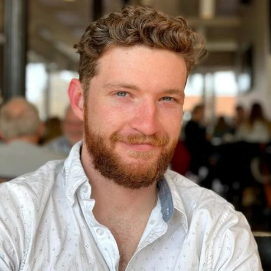
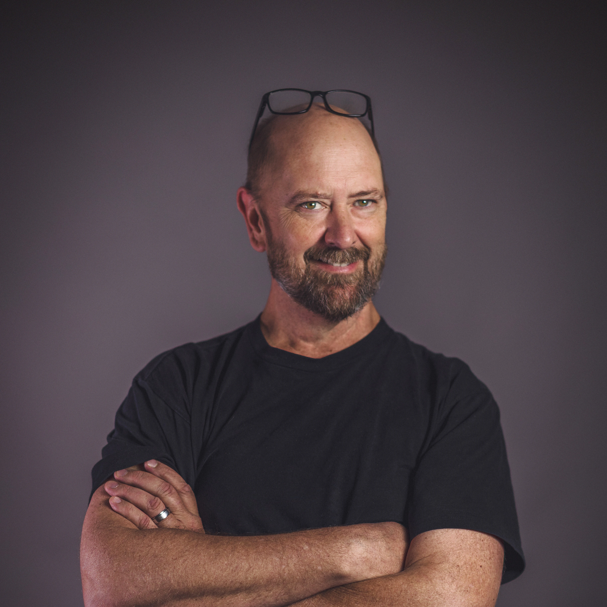

A cultural event; the result of an encounter

Learn more about the painting →At a moment of encounter with something extraordinary and fulfilling, Peter said what came most naturally to him, and he desired the moment to last. We, too, desire these moments where we are struck by what is truly good and beautiful.
Join us for a time of encounter at the Des Moines Meeting. Hear the witness of people who spent time with a man on the path to sainthood. Engage questions about what it means to be human in a digital age. Listen to music performed by talented artists. Experience a cultural event with people whose lives have been shaped by an encounter with God.
This event is free and for everyone. Welcome! It is good that we are here.
Pope Benedict XVI gave the homily at the funeral Mass for Monsignor Luigi Giussani in 2005. He opened with these words:
Father Giussani grew up in a house that was—to use his words— poor in bread but rich in music, so that from the very beginning he was touched, or, better, wounded, by the desire for beauty. He was not satisfied, however, with just any ordinary beauty, with beauty however banal; he sought rather Beauty itself, infinite Beauty, and thus he found Christ. In Christ he found true beauty, the path of life, true joy.
Now recognized as a Servant of God, the cause for beatification of Luigi Giussani will soon advance from the local level to the Vatican.
Hear from people whose lives were definitively shaped by their experience with this man, and learn what they observed in the life of this priest full of passion for life and for Christ.

Holly Peterson spent the majority of her career in her native California. She has been a high school teacher and principal and on the education faculty of both the University of San Francisco and the Catholic University of America. Her doctoral dissertation centered on the pedagogy of Mons. Luigi Giussani, and she is presently the Assistant Superintendent for Catholic Schools in the Diocese of Columbus, Ohio.

Mr. Maurizio (Riro) Maniscalco is the President and one of the founders of New York Encounter. Born and raised in Italy, Mr. Maniscalco moved to the States with his wife and kids in 1994 and lived in NYC until 2020. After a career spent mostly in Human Resources (both in Italy and in the US) and managing a Language School he had established in New York, he now lives in Minnesota, writing books and songs together with articles for an internet newspaper (IlSussidiario). He has recorded multiple CDs with The Bay Ridge Band and with his friend Jonathan Fields. His books are published by SEF Florence and ITACA Libri.
By now everyone knows: the young people born between 1997 and 2012 have lived in a world that has always known the internet and smartphones. With seemingly endless connection and the ability to curate an online persona and experiences that uniquely fit one’s particular interests, is there an ongoing need for communal worship, for non-virtual experiences, for God? Young people and their mentors offer their perspectives.

Fr. Stefano, born and raised in northern Italy, has a BS and MS in Physics from the University of Milan, a BA in Philosophy from the Lateran University and a BA in Theology from the Gregorian University. After 8 years in Spain, Fr. Stefano moved to North St. Paul and has taught at St. Peter since 2023. In his 15 years of teaching experience, he has taught calculus, algebra, physics, and religion in Italy, Spain, and the US. He enjoys playing guitar, fishing, and cooking.

As a recent graduate of the Missouri School of Journalism now working in high school ministry, Caroline's everyday life is entrenched in all things Gen Z. Her work with Serva Fidem involves launching a pilot program within the Diocese of Des Moines to equip public school students with the resources to sustain their faith beyond graduation.
Hi! I’m Kash Fischer a Junior at PCM High School who attends Ss. John & Paul Parish in Altoona. Some of the extracurricular activities I participate in include, basketball, cross country, track, and Serva Fidem. I look forward to growing with everybody in faith, God Bless!
Much of our life and identity is shaped and determined by our work. The lack of work can be a disorienting and painful ordeal. For some, work is a place where leadership and business acumen is fully expressed. For others, the work of their hands is its own reward. Work may be seen as a distraction from a contemplative life, a tool to allow us to “skip to the good part.” What is the meaning of work when artificial intelligence has the potential to replace work previously done by humans? A panel of workers in widely varied industries offer their perspectives on work and faithfulness to their religious convictions.

Damien Riehl is a technology lawyer who clerked for state and federal judges, litigated for 15 years, and helped companies with cybersecurity. At Clio, Damien and his team combine the Business of Law and Practice of law, using Generative AI to extract and generate valuable insights from a dataset of over one billion legal documents — worldwide.

Andy Gustafson is an Economy of Communion Entrepreneur, and also Professor of Business Ethics and Society at Creighton University where he has taught for 21 years in the Heider College of Business. He is interested in the ways faith can be integrated into our business lives, and even how business can contribute to and be a part of our spiritual life. He lives with his wife Celeste and two kids, Amos (3 1/2) and Vivian (1).
Close the day with an evening of live piano. A moment of beauty to end a day of encounter.
Classical pianist and educator Dr. Brian Billion presents concerts regularly around the US. He also teaches a thriving piano studio in the Twin Cities, Minnesota. Dr. Billion holds degrees in Piano Performance from The Juilliard School, Catholic University of America, and The University of Minnesota. In his performances, Dr. Billion presents both the music of the great masters, played with musical feeling and technical brilliance, as well as the spoken word, elucidating with expertise what he finds most interesting, relevant, and moving about the music.
11:00 – 11:15
Welcome & Introduction
11:15 – 12:15
First Panel
Those who knew Giussani
12:15 – 1:00
Lunch Together
Stand, eat, and talk
1:00 – 2:00
Second Panel
Faith & Gen Z
2:30 – 3:30
Third Panel
The Dignity of Work
4:00 – 5:00
Mass
At the Cathedral
5:00 – 7:00
Dinner
7:00 – 8:00
Piano Concert
Join Us
This is a day for anyone who takes their life seriously and
hungers for something more.
Bring a friend.